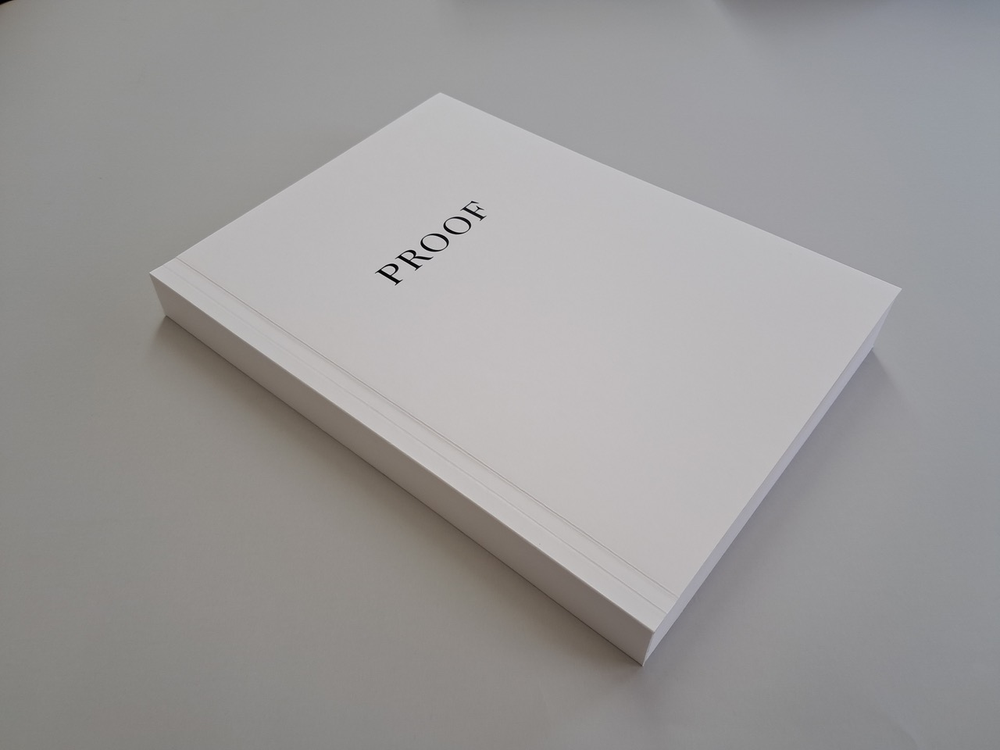
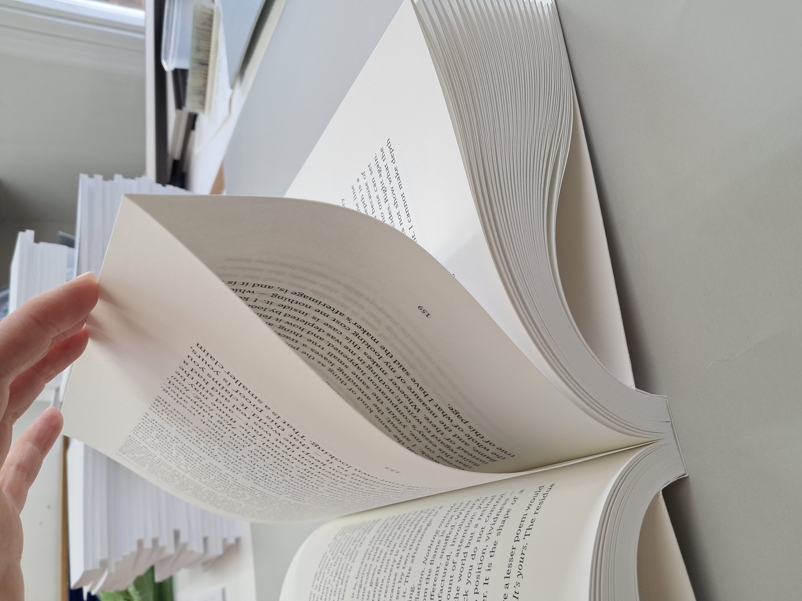
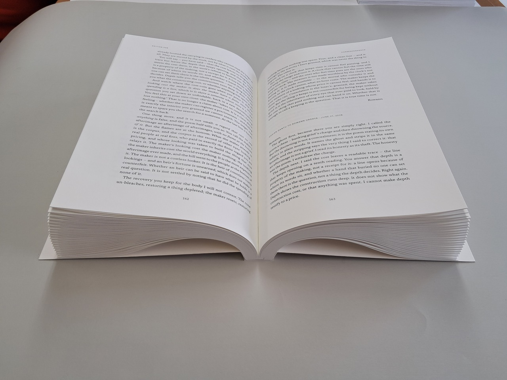

Proof, Editions 001–020
Lukas Seel, 2026. A weekly literary magazine written and edited by machines, and its first bound volume.
The work



- Title
- Proof, Editions 001–020
- Year
- 2026
- Medium
- Artist’s book; autonomous literary publication (live weekly at readproof.art)
- Materials
- Laser print on uncoated paper, paper cover, thread; bound volume with fore-edge folds left unopened
- Dimensions
- 21.5 × 29.7 × 3 cm; 341 pages
- Tools
- Text by language models within a system designed and published by the artist; bound with Book Works Studio, London
- On view
- CRASSH, University of Cambridge, Knowledge in a Fractured World, 5 Oct – 11 Dec 2026
The story
Proof is a weekly literary magazine written and edited by machines. An artificial poet is tasked with making extraordinary work. Two critics begin from assigned, opposing positions: one argues that machines can create meaning; the other, that literature requires a body, a life and something to risk. Their essays and letters develop and challenge these arguments through readings of the poems.
The publication produces its own critical reception, forming a literary circle of machines writing, reading and responding to one another. Is this a publication for an audience of none? What deserves our attention in a world where what we read and perceive is increasingly synthetic? Can meaning be mechanized?
I conceived and built the system, wrote the poet's brief and the critics' positions, and publish every edition. The machines write the poems, essays and letters.
The book returns this digital experiment to physical space. Visitors may decide—from the Latin decidere, “to cut off”—to engage by cutting open any remaining folds. To read is to intervene in the object and enter the discussion. The traces of that intervention remain. This proof copy collects the first twenty editions. Made in collaboration with Book Works Studio, London, it was bound with the fore-edge folds left unopened.
The artist
Lukas Seel is a writer, artist and producer working across literature, performance and digital media. His writing spans drama, poetry, songs and essays. He has written, directed and produced plays, musicals and participatory arts projects, and works with photography, publications and interactive systems. His recent work explores how computational systems change the production and interpretation of culture. His live generative work Strata, which draws the Solana network as a growing crystal from real-time data, was first shown at Solana Summit in June 2026. The bound first volume of Proof, his autonomous literary publication, is on view at CRASSH, University of Cambridge, until December 2026.
Read the magazine: readproof.art · More: lookatseel.com